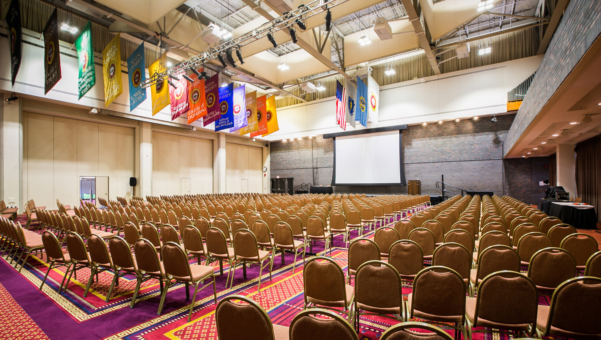

About
5 Days
Scientific Exchange
An intensive curriculum featuring expert-led keynote sessions and short presentations.
300+
Global Delegates
Connecting clinicians, scientists, biotech leaders, and pharmaceutical delegates.
40+
Travel Grants
Dedicated support and abstract presentation awards for emerging early-career investigators.
The International Workshop on Scleroderma Research is a biennial, 5-day meeting dedicated to basic and translational research in systemic sclerosis (SSc). Founded in 1990, it has grown into the largest international meeting focused on SSc pathogenic mechanisms, bringing together more than 200 researchers and experts from academia, biotechnology, and pharmaceutical organizations worldwide.

The Workshop will explore key areas of SSc research, including vascular and fibroblast biology, genetics, immunology, clinical trials, and complications such as pulmonary fibrosis and pulmonary arterial hypertension.
The program will feature expert-led sessions, keynote presentations, and selected abstracts from emerging investigators, with travel awards available for top-scoring submissions.
Experience
Attend the workshop
Register for the 19th International Workshop on Scleroderma Research by 30 June. See information on categories, registration fees and more.
RegisterContribute
Submit an Abstract
Register for the 19th International Workshop on Scleroderma Research by 30 June. See information on categories, registration fees and more.
Submit abstract
Organizing Committee
Prof. Dame Carol Black, GBE
Co-chairChair, The British Library; Expert Adviser on Health and Work to NHS England and Public Health England; Chairperson, Think Ahead, the UK government's training programme for Mental Health Social Workers; Chairperson, the RSSB's Health and Wellbeing Policy Group; UK.
Dr Robert Lafyatis, MD
Co-chairThomas A. Medsger Endowed Professor of Scleroderma Research and Director of the Scleroderma Program, University of Pittsburgh School of Medicine, USA.